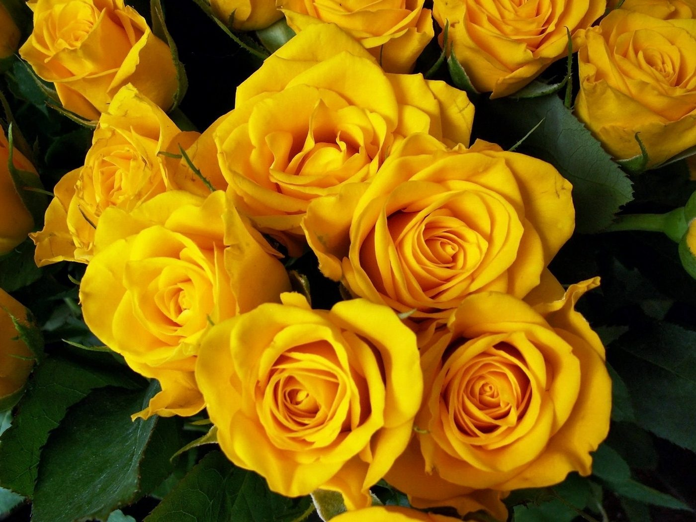

Te quiero mucho,nunca lo olvides. Sé que esto ya acabó, pero quería mandarte este detalle. Muchos besos y abrazos para ti.
Te quiero mucho
Flaquita gracias por estar en mi vida este tiempo Quizás no tuve la suerte de quedarme contigo, ni de ser tu final feliz...pero tuve el privilegio de cruzarme en tu vida, de conocerte, de compartir risas, miradas y momentos que aún guardo con ternura.Fuiste parte de mis días más bonitos, y aunque hoy nuestros caminos ya no se crucen mas, no puedo desearte otra cosa que no sea felicidad, aunque no sea a mi lado.gracias por alegrar mis días cuando mas lo necesitaba , cuidate mucho
TE QUIERO COMO UNA VACA MUUUUUUUUUUCHO